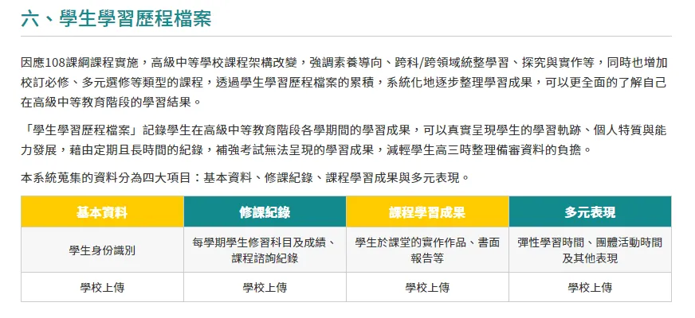
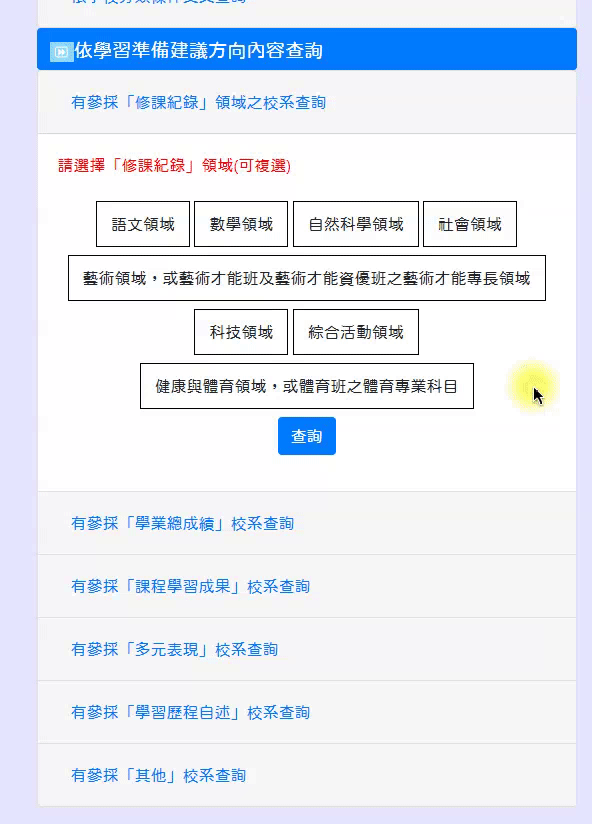

108課綱 的實施，除了對 111學測的高中生選組 造成影響，對「申請大學」也產生了重大變革。而其中最大影響就是「學習歷程檔案」
108課綱學習歷程檔案
簡述
以往申請大學是在高三初考完學測，就需要在短時間內製作與提交備審到大學端去，但在 108課綱 實施的學習歷程檔案，每學期學生均要上傳指定件數的「 學習成果檔案」與「 多元表現」，其餘項目「 基本資料」與「 修課紀錄」則 由學校每學期上傳，這意味著我們沒有最後才補救的機會，必須要在高一時就多少能摸索出自己的志向，而 學校扮演著輔導學生摸索志向興趣的重要角色 。

取自 12年國教網-108課綱資訊網

取自 高雄市立三民高中 1082課綱家長說明會簡報
大學端參採學習歷程
由 聯招會 在 109/5/15 最新公布的 「 111學年度大學申請入學參採高中學習歷程資料完整版查詢系統 」中可以查詢到各校系最終定案的「大學端參採學習歷程項目」。
在這個平台可以查詢到未來個人申請該校系所需的資料，點進去就會呈現出來，換言之就是現在就要大略確定自己未來想去的學校，為該學校的需求做好準備。



聯招會-111學年度大學申請入學參採高中學習歷程資料完整版查詢系統 / 參採操作 / 參採項目展示
學測參採數A/數B？
數學A、 數學B究竟有何不同？
「數學 A」考科的測驗範圍為 10 年級必修加上 11 年級必修 A 類課程內容，「數學 B」科的測驗範圍為 10 年級必修加上 11 年級必修 B 類課程內容，兩考科採分節施測，考生可自由選考。
數學A類課程在課綱裡稱為「 高數學需求」、B類課程則為「 低數學需求」，前者適合銜接 數、理、化、部分商學類科，後者適合銜接 文、法、社會科學類 等科系。
在 「 111學年度大學申請入學參採高中學習歷程資料完整版查詢系統」也已經公布該校系參採數學考科的情況， 這也象徵著選組時必將該校系所參採狀況列入選組考量 。


資料來源：國立鳳山高中 108高一課程專區

該校系參採數學情況
推薦規劃整理工具：Trello
而我自己是使用 Trello 來 整理我心目中的校系、參採項目、該科系對學生的要求、其餘，因為在該 校系參採頁面(以交大資工甲組為例) 的資訊實在是太零散了，而且也不可能只準備一種校系的資料，這時就很需要使用工具整理與統整這些零散的資訊。
檢視與歸納該科系參採項目
以交大資工系甲組為例，大略檢視內容布局後，可以歸納出「 參採數學考科情形」、「 修課紀錄」、「 學習成果檔案」、「 多元表現」、「 學習歷程自述 」這幾項大分類。
在 Trello 內的標籤設定，就可以把上述這幾項大分類都先 Key 進去，等等在分類時就會很快，而且在未來的篩選工作就會快上很多，所有參採項目可以參考在首頁的項目篩選。

先整理出該校系採計的項目


將參採項目都 Key 進去 Trello 中的標籤
為校系新增一張卡片，並將資料整理進去
在列表(例如資訊工程系)下新增一張卡片，然後將資料都整理進去，最後將參採項目都勾選起來，一張校系卡就整理好囉 (❁´◡`❁)

在預設列表下新增一張卡片，打上該學校名稱

將該校系的資料整理進去，並勾選參採項目
未來要篩選參採項目時…
在右側的選單的「搜尋卡片」功能中，就可以勾選自訂的標籤項目(參採項目)，對卡片(校系)進行篩選，最終結果就會呈現在畫面上拉～ 🎠

在 Trello 中以標籤篩選卡片
心累心累又變成一篇教學文了 (;´༎ຶД༎ຶ`)